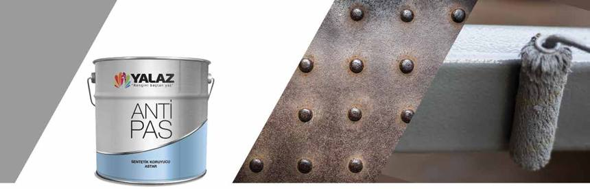

Индустриальная серия
Industrial Antirust Paint — Антикоррозионная краска
Промышленная антикоррозионная краска, создающая барьерную защиту металлических поверхностей от ржавчины и коррозии. Обеспечивает долговременную защиту в условиях агрессивных промышленных сред, воздействия влаги, кислот и щелочей.